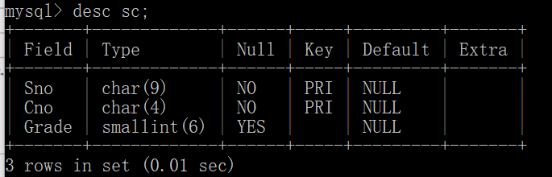
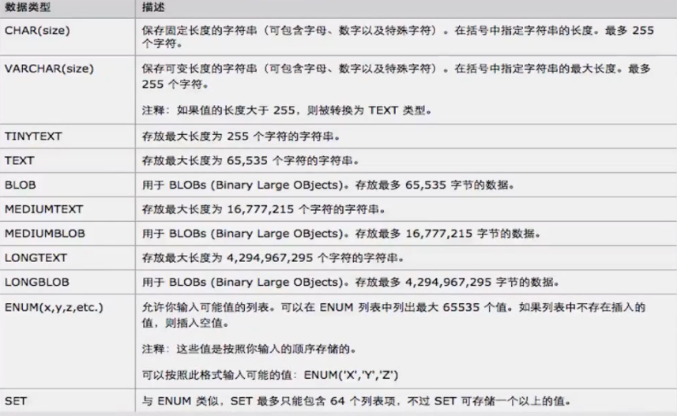
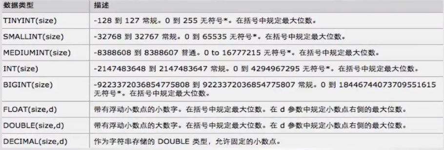
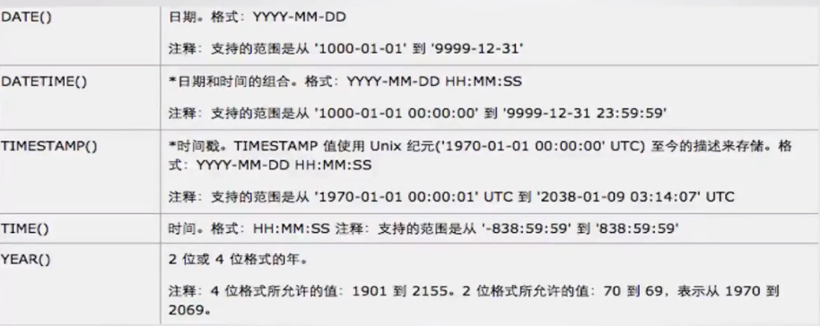

MySQL基础教程（一）
SQL(Structured Query Language)
数据的更新、查询和管理
MySQL的安装和配置
关系型数据库，开源。
根据各种网上的安装指导，安装完MySQL后，需要修改配置文件。找到安装目录下的配置文件，我的是C:\ProgramData\MySQL\MySQL Server 5.7\my.ini，如果不更改，可能出现各种字符问题。
1
2
3
4
5
6
7
8
9
| [client]
default-character-set=utf8
#修改客户端默认字符集
[mysqld]
character-set-server=utf8
default-storage-engine=INNODB
#修改服务器默认字符集
#修改默认存储引擎
|
windows下重启生效
添加和删除数据库
查看当前数据库
添加数据库
删除数据库
数据类型
数据组成结构
显示table1（这里是表sc）的数据类型
1
| desc sc； ## 或者是 describe sc；
|
出现如下表格：

常用数据类型
- 文本类

最常用VARCHAR、TEXT、LONGTEXT
- 数字类

最常使用TINYINT，比如表示0和1.其次INT、BIGINT、Double也经常用到。
- 日期类

增加、删除或修改table的列
- 增加列
格式为alter table [table_name] add [column_name] [data_type] (not null) (default)，表示在表table_name添加一个名为column_name的列，数据类型为data_type。小括号为可省略的内容，not null表示非空，default决定默认值。例如：
1
| alter table gc add c1 int(11) not null default 1;
|
- 删除列
格式为 alter table [table_name] drop [column_name]。例子：
- 修改列
格式为alter table [table_name] change [old_column_name][new_column_name][data_type]
修改表名
格式为alter table [table_name] rename [new_table_name]
1
| alter table gc rename newgc;
|
查看表数据
1
2
3
| select * from table1; ##查看整个表
select col_name1,col_name2,... from table1; ##查看表名为col_name1,col_name2,...的几列
|
插入数据
1
2
3
4
5
| insert into [table_name] value (值1，值2...);
##插入一整条数据
insert into[table_name](列1，列2，...) value(值1，值2...);
##插入一条数据，某几个特定列的值
|